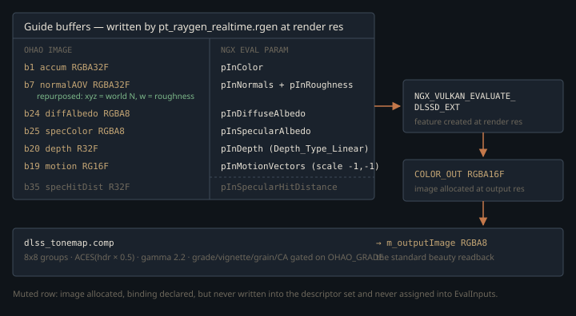

Monograph · Tree · ← Module hub · DLSS Ray Reconstruction
denoise
DLSS Ray Reconstruction
NGX dlssd init, guides, binding 35 hit-dist.
A denoiser that rewrites the renderer
OIDN is a post-process with a shopping list: the finished frame plus the albedo and normal AOVs the tracer already writes. Its one structural demand on the pipeline is a CPU readback — it is the only mode flagged `needs_cpu_readback`.
static constexpr bool needs_cpu_readback =ohao/render/rt/rt_meta.hpp:107DLSS Ray Reconstruction is a different contract — a trained reconstruction network that owns the temporal history, so it dictates what the path tracer must emit before it produces anything at all. Passing `--denoise=dlssrr` stops the raygen accumulating, adds a deterministic Halton sub-pixel offset to the primary ray, repurposes one AOV binding into a different encoding, adds a second luminance clamp on top of the one the realtime profile already applies, and moves tonemapping into a compute pass. This page is about that blast radius, and about the two pieces of it that are built but not wired.
Two gates before a single ray is denoised
The wrapper keeps NGX out of every header — the feature handle and parameter block are plain `void*` members only `dlss_rr.cpp` casts back — and the whole implementation sits inside `#ifdef OHAO_DLSS_ENABLED` with a stub tail, so an `-DOHAO_DLSS=OFF` build still links and `parseDenoiseMode("dlssrr")` degrades to `None` with a warning.
Then two runtime gates. NGX initialises through the ProjectID form (no NVIDIA app-id whitelist needed for a custom engine), and availability is *not* something the driver volunteers — you query it, and when the answer is no, four further parameters explain why, including a minimum driver version the code prints verbatim rather than guessing.
params->Get(NVSDK_NGX_Parameter_SuperSamplingDenoising_Available, &ssdAvailable);ohao/render/rt/denoise/dlss_rr.cpp:139Feature creation is deferred to the first frame that actually runs in DLSSRR mode, because NGX records real GPU setup work and the wrapper borrows the caller's command buffer rather than opening its own. A one-shot latch means a failed init costs one frame, not an NGX round-trip every frame forever.
The guide buffer that is two guides
The interesting part of a DLSS-RR integration is not the call, it is the demodulated guide set. `EvalInputs` names seven images, and six of them already existed from earlier denoiser work, all at render resolution: the RGBA32F accumulation buffer as `pInColor`, the RGBA8 diffuse-albedo (binding 24) and specular-colour (binding 25) demodulation guides, the RGBA32F normal AOV, the linear view-Z depth AOV, and the RG16F motion vectors. The seventh, `COLOR_OUT`, is new for DLSS and is the one image *not* at render resolution — it is allocated at output size, because that is what the network reconstructs into:
// OUTPUT/display resolution: DLSS-RR upscales the render-res guide buffersohao/render/rt/path_tracer_images.cpp:970Binding 25 is not F0, whatever `pInSpecularAlbedo` suggests. The raygen writes `mix(F0, vec3(1.0), metallic)`: a dielectric carries its F0, a metal carries white, because a metal's F0 is already folded into the specular throughput and re-applying it at demodulation double-darkens the result.
firstHitSpecColor = mix(F0, vec3(1.0), metallic);shaders/rt/pt_raygen_realtime.rgen:506One of the six does double duty. DLSS-RR accepts normals and roughness as one image if the feature is created in packed mode, which is what the create params ask for:
createParams.InRoughnessMode = NVSDK_NGX_DLSS_Roughness_Mode_Packed;ohao/render/rt/denoise/dlss_rr.cpp:192and then the *same* `NVSDK_NGX_Resource_VK` is handed to both eval slots:
evalParams.pInRoughness = &normRough;ohao/render/rt/denoise/dlss_rr.cpp:273No image is dedicated to that encoding — the R10G10B10A2 pack at binding 26 is NRD's canonical encoder and its format is unsigned, while DLSS wants signed world-space normals. So binding 7 — the RGBA32F normal AOV every other denoiser reads as `N * 0.5 + 0.5` — is overwritten in place with the normal in `xyz` and perceptual roughness in `w`, gated on the DLSSRR push-constant flag so other modes stay byte-identical:
imageStore(normalAOV, pixel, vec4(N, roughness));shaders/rt/pt_raygen_realtime.rgen:495
That overwrite must stay *after* the ordinary `enableAOVs` normal write, not before it. Both stores target binding 7 and the DLSSRR store wins only because it is second. Reorder them while tidying the shading block and DLSS silently receives half-space-encoded normals — a guide that is wrong but never NaN, so nothing errors and the image just reconstructs badly.
Three conventions, and the one that only looks like one
DLSS and OHAO disagree about signs in two places and about matrix storage in a third. The jitter offset must be given in render-resolution pixels and with the sign flipped, which the wrapper does on the way in:
evalParams.InJitterOffsetX = -in.jitterX;ohao/render/rt/denoise/dlss_rr.cpp:287Be exact about what is jittered: nothing here builds a jittered projection matrix. The Halton offset is added to the primary ray's pixel coordinate in the raygen, and the matrix handed to DLSS is `glm::inverse(pc.invProj)` — unjittered. The negation is nvpro-samples' convention for a projection jitter, and applies unchanged to a ray-coordinate jitter of the same sub-pixel size.
vec2 uv = (vec2(pixel) + 0.5 + jitter + pc.jitter.xy) / vec2(pc.params.xy);shaders/rt/pt_raygen_realtime.rgen:304Motion vectors are the second sign. They are written by the raygen as `currPix - prevPix` where DLSS wants `prevPix - currPix`. Rather than rewrite the raygen — NRD and the à-trous denoiser read the same image — the flip is folded into the scale the caller passes:
ei.mvScaleX = -1.0f; ei.mvScaleY = -1.0f; // OHAO writes currPix-prevPix; DLSS wants prevPix-currPixohao/render/rt/path_tracer_render.cpp:823The third looks like a bug and is not. DLSS-RR documents its matrices as row-major and left-multiplying; glm produces column-major, right-multiplying matrices; the code passes glm's raw pointer through untouched. Let $A$ be the world-to-view map applied as $v' = A v$ to a column vector, and $B$ the matrix DLSS expects, applied as $v'^{\mathsf T} = v^{\mathsf T} B$ to a row vector. Those agree only when
— because walking $B$ along rows *is* walking $A$ along columns. The convention transpose and the storage transpose are the same transpose applied twice, so the bytes are already correct and any "fix" inserting a `glm::transpose` here breaks reprojection:
evalParams.pInWorldToViewMatrix = const_cast<float*>(in.worldToView);ohao/render/rt/denoise/dlss_rr.cpp:300One create-time flag follows from the same care: OHAO's depth AOV is linear view-Z in R32F, not a hardware depth buffer, so the feature declares it as such.
createParams.InUseHWDepth = NVSDK_NGX_DLSS_Depth_Type_Linear; // OHAO depth AOV is linear view-Z (R32F), not HW depthohao/render/rt/denoise/dlss_rr.cpp:193Who owns the history
DLSSRR is declared `wants_fresh_sample` in the render-mode traits, alongside à-trous and against NRD. That single trait forces the raygen's history counter to zero every frame, so the accumulation buffer holds a clean N-spp *frame* rather than a temporally accumulated average — the denoiser, not the tracer, integrates across time:
pc.control.y = freshSample ? 0u : m_historyFrameCount;ohao/render/rt/path_tracer_render.cpp:712Consequently `InReset` is raised only on a genuine first frame or an explicit accumulation reset, never on camera movement. Resetting on movement is the tempting alternative, and it is wrong for the same reason it was wrong for the à-trous path: motion vectors exist so the network can reproject *through* camera motion, and discarding history every moved frame yields raw 1-spp noise for as long as the user keeps moving.
ei.reset = (m_historyFrameCount == 0u);ohao/render/rt/path_tracer_render.cpp:828A second clamp on top of one that was already there
The realtime profile is already a biased estimator, in every realtime mode and independent of the denoiser. `kRealtimeRTSettings` enables the firefly clamp at luminance 10.0; the raygen applies it per-contribution inside each NEE, env-sampling and GI branch, then once more to the whole radiance at 0.75× the threshold. Only the offline profile sets `enableFireflyClamp = false` and leaves the estimator alone, which is what the engine's no-bias-offline rule demands.
.enableFireflyClamp = true,ohao/render/rt/rt_settings.hpp:44float realtimeClamp = pc.tuning.x * 0.75;shaders/rt/pt_raygen_realtime.rgen:1554DLSSRR adds a *third* clamp, at 10.0, applied to the accumulated pixel value just before the accumulation store and gated on the DLSSRR flag alone. It is not redundant: the 0.75× whole-radiance clamp runs before the ReSTIR GI term is added to `radiance`, so this is the only clamp that sees the final per-pixel sum. At 1 spp a stochastic bright pixel lands somewhere different each frame; a temporal reconstruction network reads that as motion and blinks. The rejected alternative was to let the network absorb the spikes — cheaper and one less bias, but that blink is exactly what this exists to remove. The threshold is not arbitrary either — the shader comment records the reason: 10.0 sits above the emissive HUD's ~5.7, so overlay glyphs survive the clamp.
const float kFireflyMax = 10.0;shaders/rt/pt_raygen_realtime.rgen:1845Display space, and why the beauty image still works
DLSS writes HDR-linear RGBA16F, so something has to tonemap it. `dlss_tonemap.comp` runs in 8×8 groups and applies the same `ACES(hdr * 0.5)` curve plus 2.2 gamma the raygen uses in `None` mode, which is what keeps a DLSS frame comparable to an undenoised one:
vec3 ldr = ACES(hdr * 0.5);shaders/compute/dlss_tonemap.comp:52Everything else sits behind one `OHAO_GRADE` master in an 8-byte push constant; set it to 0 and pure ACES remains. Most of it — contrast pivot, split tone, saturation, vignette, animated grain — runs after the curve, in display space. The chromatic aberration does not: it is a *source-fetch* offset on the HDR loads, before the curve, splitting the R and B taps radially. That offset is truncated to whole texels, so although at full strength the float peaks at $|d| \cdot r^2 \cdot 6 = 0.5 \cdot 0.5 \cdot 6 = 1.5$ per axis in the corner, the largest shift it can realise is one texel per axis:
ivec2 off = ivec2(d * s * r2 * 6.0);shaders/compute/dlss_tonemap.comp:44The whole pass is downstream of the estimator, so none of it biases the render; the firefly clamps above do, and the two should not be confused.
The pass writes back into `m_outputImage`, the same RGBA8 image the raygen would have written, which is why the DLSS result reaches the screen through the ordinary readback with no special case. What *is* special-cased is the readback barrier: its source stage must be `COMPUTE` rather than `RAY_TRACING` when the tonemap ran, or the copy races the dispatch.
What is built but not connected
Two subsystems here read as working features and are not.
The specular hit-distance guide looks finished from either side alone: binding 35 is in the descriptor set *layout*, an R32F image is allocated at render resolution, the realtime raygen ends with an `imageStore` into it, and the wrapper forwards it as `pInSpecularHitDistance` whenever the view handle is non-null. It is detached at both ends.
bindings[35].binding = 35;ohao/render/rt/path_tracer_descriptors.cpp:201The write side breaks first. The RT descriptor set is updated by exactly one `vkUpdateDescriptorSets`, fed by a fixed `VkWriteDescriptorSet writes[29]` array whose highest `dstBinding` is 28 — so binding 35 is declared and never populated, and the shader store has no descriptor through which to reach `m_specHitDistImage`:
VkWriteDescriptorSet writes[29] = {};ohao/render/rt/path_tracer_render.cpp:160imageStore(specHitDistAOV, pixel, vec4(specHitDist, 0.0, 0.0, 0.0));shaders/rt/pt_raygen_realtime.rgen:1923The read side breaks independently: the one site that fills `EvalInputs` never assigns `specHitDistView`, and the two `getSpecHitDistAOV*` accessors have no callers anywhere — `m_specHitDistView` appears only at creation, destruction, and those accessors. The guide is always omitted, so the glossy-reflection reprojection it was written to fix is not in effect, and wiring the eval side alone would forward an image nothing has written.
The upscaling presets are the second. `OHAO_DLSS_QUALITY` is parsed into a `DlssQuality`, and the tracer really does shrink its internal trace resolution to an even-dimensioned fraction of the output size:
scale = dlssRenderScale(dlssQualityFromEnv());ohao/render/rt/path_tracer.cpp:278The sole `createFeature` call, however, passes the render dimensions as *both* input and target and leaves `quality` at its `DLAA` default; `EvalInputs.outW/outH` are likewise never set, so `evaluate` falls back to render dims for `COLOR_OUT` and the tonemap dispatches a render-res grid:
if (!m_dlssRR->createFeature(cmd, m_width, m_height, m_width, m_height) ||ohao/render/rt/path_tracer_render.cpp:57DLAA — native-resolution pure denoise, and the default — is therefore the only configuration that currently produces a full frame. An upscaling preset reduces the traced pixel count as advertised but leaves DLSS reconstructing to the reduced size inside output-sized images.
Contracts
- The DLSSRR normal write must remain the last store to binding 7 in the raygen. Both encodings target the same image and only ordering decides which survives.
- `createFeature` records GPU work into the command buffer it is given; the caller must submit that buffer or the feature is never really created.
- Any render- or output-resolution change must release the feature and clear the init latch — an NGX feature is bound to the dimensions it was created with.
- The tonemap's SPIR-V is found by a relative search list (`build/shaders/…`, `bin/shaders/…`), so the binary must launch from a directory where one of those resolves.
- Only DLAA is presently a correct end-to-end configuration; `OHAO_DLSS_QUALITY` shrinks the trace without completing the upscale.
Source files
ohao/render/rt/rt_meta.hppohao/render/rt/denoise/dlss_rr.cppohao/render/rt/path_tracer_images.cppshaders/rt/pt_raygen_realtime.rgenohao/render/rt/path_tracer_render.cppohao/render/rt/rt_settings.hppshaders/compute/dlss_tonemap.compohao/render/rt/path_tracer_descriptors.cppohao/render/rt/path_tracer.cppohao/render/rt/denoise/dlss_rr.hppParent hub for the full pipeline narrative; this page is the file-level design unit. Sitemap · hover glossary terms anywhere.